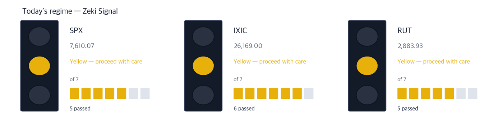
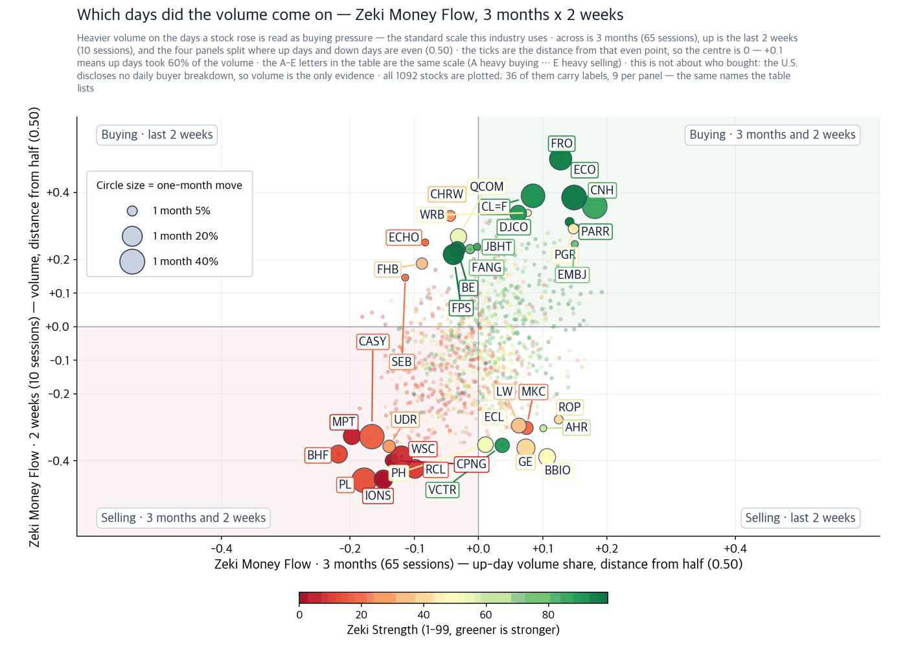

The Fed raises today — the answer comes from bonds, not stocks
S&P 500 7,610.04 (+0.32%) | Nasdaq 26,160.71 (+0.69%) | Dow 52,068.84 (-0.05%) | US 10-year 4.965% | Zeki Signal Yellow |

| Lit lamp | Today's regime. Green means buyers have the edge, yellow means wait, red means no new buys. |
| Filled squares | How many of the 7 conditions passed. More filled means firmer market structure. |
| All filled but not green | Something else pulled the grade down one step. The reason is printed under the lamp. |
The Zeki Signal reduces seven regime tests to one light. Green means a good buying regime, yellow means stand back and watch, red means refrain from buying. All three indexes are yellow today.
- The Federal Reserve is expected to raise rates at 2 p.m. Eastern today, with futures putting the odds above 90%. What matters is not the hike but the half-hour after it. If long-term yields fall during Chair Kevin Warsh's press conference, the market gets its relief.
- The 10-year Treasury yield touched 5.02% intraday yesterday, a 19-year high. A hike that lowers long yields sounds contradictory. But if the promise to contain inflation is believed, expected inflation far out in the future falls, and long-term yields follow it down.
- Of the four names we examined on today's figures, three met all four tests — APA, CVR Energy and Centerra Gold — while Newmont met two. The three are energy or gold. Both normally fall when rates rise, and both are rising now. That contradiction is the story of this issue.
First, the week's economics
If you remember one number this week, make it 5% — where the 10-year Treasury yield now sits. The mortgage rate closing on 7% and small caps sinking to a three-month low both come from that one number.
| Date | What to watch | What it changes |
|---|---|---|
| Sep 16, 2 p.m. ET | The rate decision and the dot plot | A second hike this year in the dots pushes long yields back up |
| Sep 16, 2:30 p.m. ET | Chair Warsh's press conference | If the inflation promise is believed, the 10-year yield falls |
| Sep 30 | Micron earnings | The first read on whether the AI build-out is still funded |
Theme 1 · Oil executives say the crisis has already arrived
Chevron's Mike Wirth and other American oil executives said global supplies are running low with no respite in sight, while the administration calls the disruption temporary. The two views are squarely opposed. (The Wall Street Journal) What makes it interesting is that crude fell 3.17% today to $102.48 a barrel, after rising 4.4% yesterday. Prices swing by the day; inventories do not refill in a day. So we looked at the one-month and three-month figures rather than today's.
Last $45.33 · today -4.38% · 1mo +9.0% · 3mo +32.3% · Zeki Strength 91 · Zeki Money B Who American oil executives · What said global supply is short · When in the September 16 paper · Where in a Middle East where the Hormuz closure has dragged on · Why inventories are falling with no alternative route · How it reaches producers first, through the price they realise on every barrel they lift. Confirming signal — $45.05, the September 15 close we read as this name's recent floor. Falling to it today and finishing above it would say the buyers are still there. What would invalidate this — A report that the Strait of Hormuz has reopened removes the shortage premise. So does a close below the September 15 level of $45.05. |
Last $53.51 · today +2.58% · 1mo +46.9% · 3mo +87.6% · Zeki Strength 95 · Zeki Money A Who the same executives · What a fuel shortage · When in the same edition · Where across US refining capacity · Why crude can be adequate while the capacity to turn it into gasoline and diesel is not · How it widens refining margins, which land straight in refiner earnings. Confirming signal — Two-week gains of 24.8% after a 46.9% month. If that two-week figure is still positive next week, the trend is intact. What would invalidate this — An earnings release showing refining margins narrowing removes the basis. So does the two-week change turning negative. |
Theme 2 · Gold is rising on the day rates go up
Gold pays no interest, so it usually falls when rates rise. Today it is up 1.36% at $4,391.90 an ounce. The reason narrows to one thing: the President is pressing the Fed, threatening to cut off trade with deficit countries unless rates come down. When a central bank looks like it can be pushed by politics, people buy the asset a government cannot print. Gold is pricing that trust, not the rate.
Last $22.16 · today +0.36% · 1mo +1.1% · 3mo +25.6% · Zeki Strength 91 · Zeki Money B Who a gold miner · What a higher gold price · When during the September 16 session · Where at its Canadian and Turkish mines · Why the cost of extraction is unchanged while the selling price rises · How the widened gap drops through to earnings almost intact. Confirming signal — Gold at $4,391.90 an ounce intraday on September 16. Finishing the week above that keeps the miner's realised-price assumption intact. What would invalidate this — If gold settles below its September 16 intraday level after the hike, the reading that it is buying central-bank trust is wrong. |
Last $122.82 · today -1.10% · 1mo +2.1% · 3mo +13.3% · Zeki Strength 76 · Zeki Money C Who the largest gold producer · What the same rise · When in the same session · Where across mines on several continents · Why for the same reason · How by the same route. But our figures do not back it as firmly as they back Centerra. Confirming signal — Zeki Strength rising from 76 above 90 would put it alongside Centerra on our test. What would invalidate this — Zeki Money falling below C on three months drops it. |
One theme we dropped today
On a decision day, stocks, bonds and the dollar all move at once, and the firms that broker and make markets in that movement earn more as volume rises. The story fits. The figures do not. Marex Group rose 3.19% today but is down 2.8% over the past two weeks, and Virtu Financial is down 11.1% over the same two weeks. On Zeki Money, recent volume in both clustered on down days rather than up days. When the story is good and the money has not arrived, we do not turn it into a name.
Excluded Marex Group and Virtu Financial are dropped from today's candidates.
Today's findings, on one page
| Theme | Name | Zeki Strength | Weight of evidence |
|---|---|---|---|
| Fuel shortage | APA Corporation (APA) | 91 | Well grounded |
| Fuel shortage | CVR Energy (CVI) | 95 | Well grounded |
| Gold and central-bank trust | Centerra Gold (CGAU) | 91 | Well grounded |
| Gold and central-bank trust | Newmont (NEM) | 76 | Needs checking |
| Volatility brokerage (dropped) | Marex Group (MRX) | 93 | Needs checking |
| Volatility brokerage (dropped) | Virtu Financial (VIRT) | 85 | Needs checking |
Weight of evidence — we counted four
(1) Did the price rise over the month? (2) Is Zeki Strength above 90? (3) Is Zeki Money A or B on three months? (4) Has the price held up over the past two weeks? The number met sets the label — no one picks it by hand.
| Name | ①up over the month | ②Strength 90+ | ③flow 3mo A or B | ④2wk not weaker | Met | Weight of evidence |
|---|---|---|---|---|---|---|
| APA Corporation (APA) | O | O | O | O | 4/4 | Well grounded |
| CVR Energy (CVI) | O | O | O | O | 4/4 | Well grounded |
| Centerra Gold (CGAU) | O | O | O | O | 4/4 | Well grounded |
| Newmont (NEM) | O | X | X | O | 2/4 | Needs checking |
| Marex Group (MRX) | X | O | X | X | 1/4 | Needs checking |
| Virtu Financial (VIRT) | X | X | O | X | 1/4 | Needs checking |
Where the money went — Zeki Money

| One dot | One stock. Its position is simply its two values, and the horizontal and vertical rules through the middle are the centre line for each. The four corner labels say what each quadrant means. |
| Dot size | The last month's move, up or down. Bigger means it moved more. |
| Dot colour | Zeki Strength — greener is stronger. |
| Only 30 | Korean and ticker labels overlap beyond that. The names left out sit near the centre, where little moved. |

| Four panels | The two measures are each compared with a centre line. Top right cleared both, bottom left cleared neither, and the other two cleared one. Each panel's title is a plain sentence saying what that means. |
| The two middle columns | Where the two periods are compared. If they carry letters A-E, that is the standard scale this industry uses: A heavy buying, B buying, C an even split, D selling, E heavy selling (a rank of all names in fifths, so A is the top 20%). If they carry numbers, that is net buying over the period. |
| Nine per panel | The largest movers in that panel. The rest are counted at the foot of the panel. These same nine per panel are the names labelled on the scatter. |
| Month bar | Zero at the centre: right is up, left is down. Compare lengths within one panel only — each panel is scaled to itself. |
| Zeki Strength | A 1-99 rank. Longer and greener means the stock's price is stronger than the market. |
What this is, and what it is not. The United States has no daily disclosure of who bought — no institutional or foreign net share counts. What we can measure is buying pressure against selling pressure over the last thirteen weeks — how much of the trading arrived while the stock was rising. A reading above 0.50 means more shares changed hands while the stock rose. That is the standard way to infer institutional accumulation, but it is an inference, not a count.
| Stock | Up/down volume | 1 month | As of |
|---|---|---|---|
| URGN | 0.69 | -12.6% | 09-16 |
| VEEV | 0.69 | +12.1% | 09-16 |
| CNH | 0.68 | +33.0% | 09-16 |
| KNSA | 0.66 | -3.3% | 09-16 |
| EBC | 0.66 | -7.7% | 09-16 |
| Stock | Up/down volume | 1 month | As of |
|---|---|---|---|
| BHF | 0.29 | -11.8% | 09-16 |
| BIRK | 0.30 | -18.9% | 09-16 |
| MPT | 0.30 | -13.5% | 09-16 |
| ROL | 0.32 | -4.6% | 09-16 |
| KIM | 0.32 | -5.9% | 09-16 |
Buying against a falling price — URGN reads 0.69, the buying side, yet the stock is down 12.6% over the month. Someone is taking the other side of the decline. That is either early or wrong, and there is no way to tell which from this number alone.
Did the money follow the names we found?
Even when the article and the price agree, we look at the money separately. Below splits three months from the past two weeks. Good on three months and poor on two weeks means the buying has stopped.
| Name | Zeki Money 3mo | Zeki Money 2wk | 1-month | 2-week |
|---|---|---|---|---|
| APA Corporation (APA) | B | A | +9.0% | +2.3% |
| CVR Energy (CVI) | A | A | +46.9% | +24.8% |
| Centerra Gold (CGAU) | B | A | +1.1% | +1.7% |
| Newmont (NEM) | C | B | +2.1% | +0.2% |
| Marex Group (MRX) | C | D | -1.2% | -2.8% |
| Virtu Financial (VIRT) | B | E | -2.5% | -11.1% |
Zeki Money grades A to E on whether volume clustered on up days. It shows where a name stands now; it does not predict the next month. We measured that four times across two markets and twenty years, and it failed to predict all four times.
| Weight of evidence | Names | Up | Down | Beat S&P 500 | Avg excess |
|---|---|---|---|---|---|
| Well grounded | 2 | 2 | 0 | 2/2 | +7.7% |
| Grounded | 1 | 1 | 0 | 1/1 | +1.7% |
| Excluded | 1 | 0 | 1 | 0/1 | -4.0% |
| All | 4 | 3 | 1 | 3/4 | +3.3% |
Intraday checklist
- 2 p.m., the dot plot — count how many dots show a second hike this year.
- 2:30 p.m., the press conference — watch which way the 10-year goes from 4.965%.
- The last 30 minutes — check whether the three indexes close above their 50-day lines.
What to watch this week
The two days after a decision often reverse. The first-day reaction is frequently undone, so it is worth not concluding from the announcement day alone. Micron's September 30 earnings will show whether the AI build-out is still being funded.
How to read this digest
Zeki Strength ranks a stock's price action from 1 to 99 against the US listings we follow. Zeki Money grades A to E on whether volume clustered on up days. Weight of evidence is how many of the four tests were met: four is well grounded, three is grounded, one or two needs checking, none is no basis. What we ourselves bought or sold is not carried in this digest.
Sources — the September 16 Wall Street Journal print edition and its live quotes the same day, plus our own price and flow data (intraday, September 16). Facts are taken from the reporting and restated in our own words.
This report is for information only and is not individual investment advice. ZekiRex™ Apex US runs a rules-based simulated portfolio of $10,000,000 — there is no real account, no order and no fill. The performance shown excludes commissions, taxes and slippage, and the price data omits companies that were delisted, which biases the result upward (survivorship bias). Past performance does not guarantee future results, and investing carries risk of loss of capital.
Based on a simulated portfolio. This is not investment advice.
This is the Rex Way, ZekiRex™